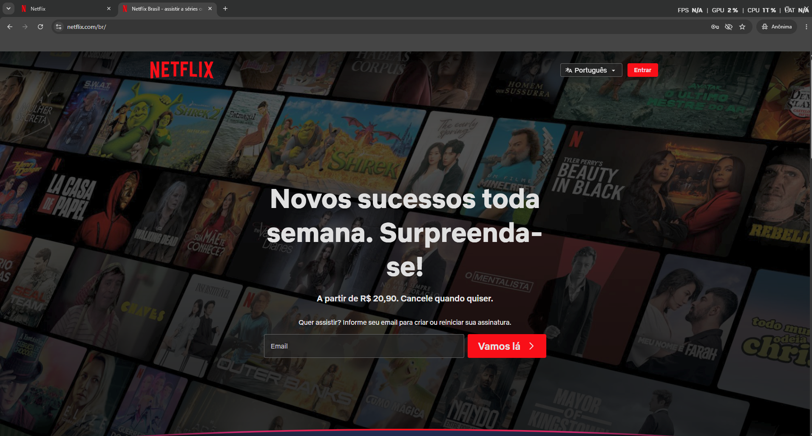
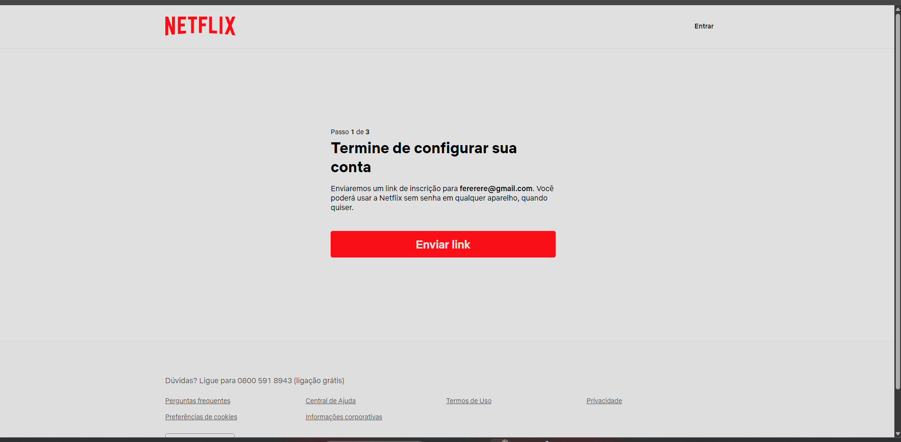
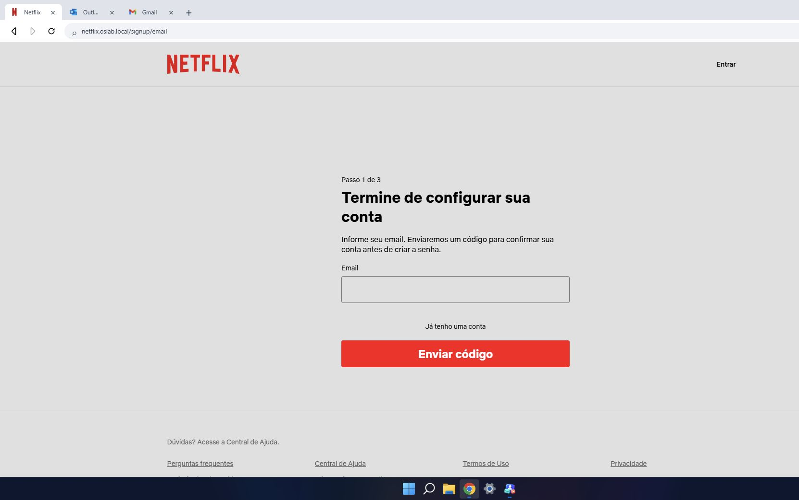

Netflix — fonte enviada e implementação
Referência — área do site 1910×907

Implementação — mesma área 1910×907
Título, texto, formulário e botões
Cadastro — padrão claro e coluna central (adaptação para código)

